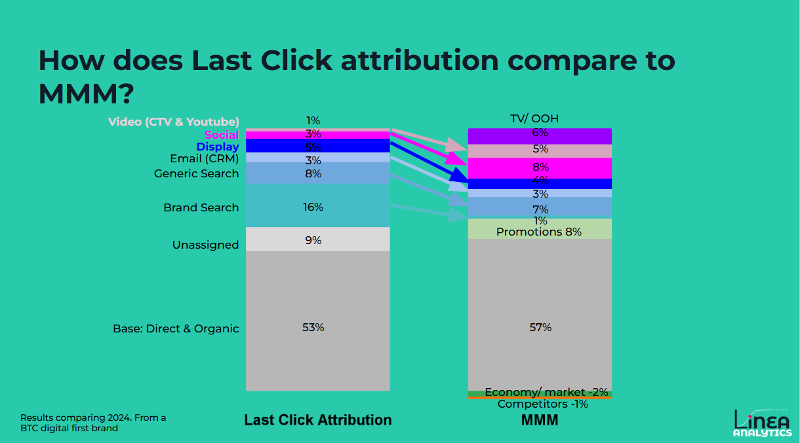
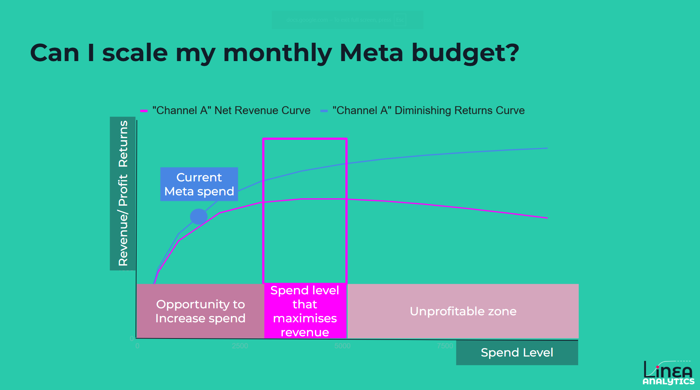

In the competitive landscape of modern marketing, data is abundant, but actionable insights are rare. Many brands invest heavily in Marketing Mix Modelling (MMM) only to leave the results gathering dust on a shelf or stuck in a static annual report.
At Linea Analytics, we believe that measurement should drive growth, not just be a report. With our always-on MMM and transparent tools, we empower brands to take action.
This article outlines the top 13 actions to take from your Marketing Mix Modelling. Whether you are looking to maximise peak periods or scale spend with confidence, these steps will ensure your marketing budget works harder for your bottom line.
Last-click Customer Aquisition Cost (CAC) is often a trap; it reflects purchase behaviour rather than marketing impact. For example, a low CAC during Black Friday might just mean there were more people in-market to buy, not that your ads were more effective. Incrementality approaches like MMM or Econometrics allow you to make investment decisions in channels that drive growth, not those that take credit.
Standard attribution has a heavy bias toward digital "click" channels. This overvalues Search and Social while ignoring the foundational impact of TV, OOH, or Brand PR. An accurate MMM allocates credit on a fair, incremental basis, allowing you to compare the true CAC of Paid Social directly against Brand awareness activity.

Historically, MMM has been seen as slow and backwards-looking. At Linea, our focus on building measurement that is Always-on means that we deliver incremental measurement at the pace of last touch. This speed means that brands get more insights. In particular, we measure the impact of campaigns when in flight and make changes based on accurate data.
The speed of Linea Always-on MMM means that we are able to get an incremental focused read on New Channels or tactics sooner. This means that less budget is wasted on non-performing channels, or an early decision can be made to scale what is working.
Last click or attribution solutions don’t take into account the impact of peak market or seasonality. For example, did your CAC improve at black Friday because of better creative, or was there just more people in the market?
At Linea, we quantify this synergy impact. It means that we are able to capture the impact of marketing. It also allows us to better plan to take advantage of peak seasonality or market conditions. Answering: How much extra should we spend at peak seasonality, and what will that deliver?
In our work with a leading FinTech to understand how changing market conditions for investments impacted acquisition costs. Measuring this synergy impact gave them confidence to plan and dynamically scale spend at periods of peak market interest.
Does your TV, Youtube or Outdoor activity drive brand search or brand awareness - your MMM can measure that. Typically, this interaction effect is referred to as building a nested model. This nesting process allows Linea to quantify how much of your brand search is driven by upper funnel activities. This provides the most accurate measurement of the upper funnel and prevents the overvaluing of channels such as brand search.
Marketing impact doesn't vanish instantly; it decays over time. Measuring Adstock in your MMM, you can understand the long-term carry-over effect of your campaigns. High-retention often indicates successful upper-funnel or brand-building work that pays off weeks or months later. Something that won’t come up in more short term focused activity.
Having this accurate measurement means that teams can estimate when they will see the impact of their marketing activity on driving new customers.
MMM looks back at your past spending to understand how changing budget levels impacts the returns you achieve. This insight allows Linea to capture the diminishing returns impact. Meaning that we have an accurate viewpoint of how increasing spending in a marketing campaign or channel will impact returns.
We then use a diminishing returns curve to identify the exact point where the next pound spent returns less than £1 in revenue. This "optimal zone" is where you should be spending it, which will change based on market conditions and seasonal effects.

Historically, MMM has been too focused on strategic decisions like allocating across channels or setting annual budgets. At Linea, we have built our own measurement system that allows us to go deeper into campaign, channel & placement level insight.
This system offers two key aspects.
This granularity of insight allows for better allocation within the channel helping teams improve social, display or video advertising buys.
Looking to set your budget for the next Year, quarter or month? MMM is the best place for budget setting. At Linea, we provide the tools to help allocate budget across media channels. Our Scenario planning tool allows teams to set budgets to maximise short & long term objectives and to take into account future changes such as market changes, economic conditions or media cost inflation.
We worked with a leading FinTech to focus on allocating budget to drive growth. Our work gave them confidence that their Meta, TV & OOH investment should be scaled with Display spend reduced. This drove a 25% ROI increase in 2025.
Not only setting a fixed budget amount, but we also allow teams to identify how much will need to be spent on paid media to hit a target level of New Customers or Revenue. This insight helps fuel marketing teams to ensure that spend is focused on hitting sales targets.
It also allows CMO’s to be a growth engine of the business. Identifying, for example, an extra £1m spent this month can help the business hit its target.
A common mistake is stopping spend the moment £1 in marketing returns less than £1 in revenue (the "optimal" point). However, for some growth businesses, overspending to achieve speed and scale is a strategic move to win the market first and optimise later.
Finally, MMM provides the only "even playing field" to compare brand-building with performance harvesting. We help you find the equilibrium that maximises long-term brand equity without starving your short-term sales.
The combined impact of this insight is that Linea delivers a 30% increase in your Return On Investment. So if you spend £5m on marketing, we deliver an extra £4.5m in Revenue (assuming an average ROI of £3).
This demonstrates the sizeable impact of your measurement. With an expected “return of measurement investment” between 20x or 40x.
For years, Marketing Mix Modelling was a slow, retrospective exercise. Brands would hand over two years of data, wait three months, and receive a static PDF. By the time the results arrived, the market had changed, and the budget was already spent.
Always-on MMM is Modern MMM. By using automated data connectivity and modern Bayesian statistical frameworks, Linea updates your model as your data flows in.
This speed allows for Scenario Planning in real-time. Instead of asking "What worked last year?", you can ask, "If I increase my YouTube spend by 20% next week, what is the projected impact on my total CAC?"
How does Always-on MMM differ from Last-Click Attribution?
Last-click attribution only sees the very last touchpoint before a sale, often overvaluing "capturing" channels like Brand Search. Always-on MMM uses statistical modelling to look at the entire landscape, identifying the "incremental" impact of every channel (including offline media and upper-funnel digital) while controlling for external factors like seasonality and economic shifts.
Can MMM really measure the impact of non-trackable channels like TV or OOH?
Yes. Unlike pixel-based tracking, MMM doesn't need a "click" to measure impact. It looks at the relationship between spending changes and sales "lifts." By isolating these patterns, MMM can accurately quantify the ROI of TV, Outdoor, and even Radio, placing them on an even playing field with trackable digital channels.
How often should we update our Marketing Mix Model?
In a volatile market, a model that is six months old is a risk. We recommend a "high-automation" approach where data is refreshed daily, weekly or monthly. This ensures that your diminishing returns curves reflect current market saturation levels, allowing you to scale investment with confidence.
Have any project on mind?
For immediate support: